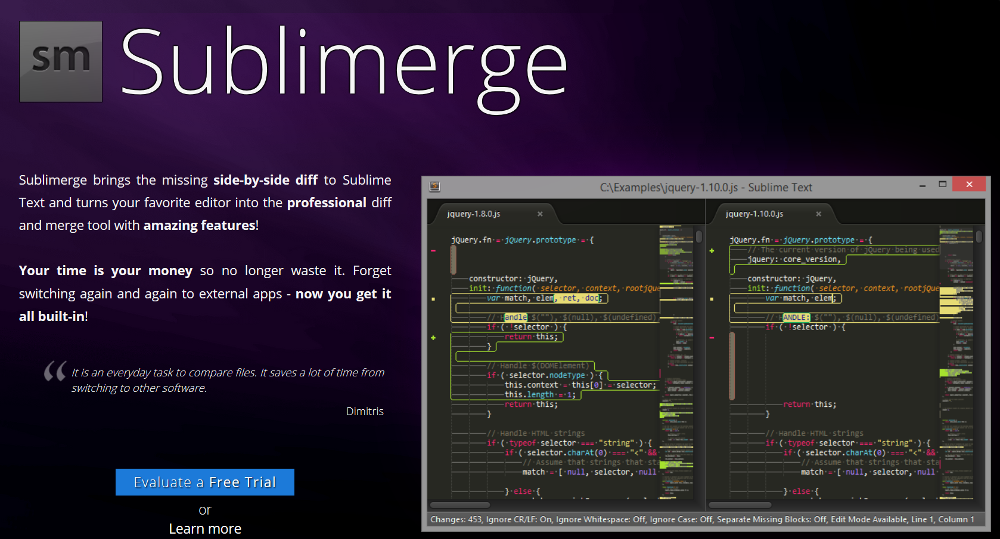

Darío Ruellan
about.me/darioruellan
@ecimtech / @sfidastudios
programo desde hace 30 años
en HTML desde hace 20 años
En el diskette venía esto:

+ winsocket + magia y más magia...
Warning
Voy a hablar de muchos editores, pero no de todos
¡Si se les ocurre algún editor interesante que pasé por alto, me pueden decir!
Nop, tampoco VIM / EMACS → https://xkcd.com/378
Y funciona con esto:
EditPlus
¡Colorización de código!
Allaire HomeSite
TopStyle
WYSIWYG
HotMetal Pro

Microsoft Frontpage
Netobjects Fusion
Macromedia Dreamweaver
Macromedia Dreamweaver
Macromedia Dreamweaver
Microsoft Expression Web
WYSIWYG Pros
- Feedback inmediato del diseño.
- Posibilidad de realizar mockups y prototipos rápidos con una sola herramienta.
- Se puede variar el formato y la composición del código resultante muy facilmente.
- Toolbox: elementos con controles y propiedades exclusivas.
- No es necesario ser un desarrollador experto para producir trabajos de calidad ...
- ... pero si lo sos podés también trabajar sobre el código
¿Es entonces la herramienta definitiva para frontend?
No porque...
- El feedback visual no es exacto al resultado final en un navegador real.
- El código final es tan bueno como el desarrollador de la aplicación.
- Los recursos están limitados por la propia herramienta.
- Modificaciones directas al código pueden ser sobreescritas o perderse en la composición final.
- Los tiempos de actualización pueden ser largos.
Code completion & Intellisense
Eclipse / Aptana Editor
IDE Codegasm
Como editor
- Colorización
- Documentación y ayudas
- Sugerencias (code hinting)
- Auto-completado basado en contexto (context-aware code completion)
- Auto-completado basado en el proyecto (code inteligence/intellisense)
- Validación basada en contexto (linting)
IDE Codegasm
Como entorno
- Debugging
- Deploy
- Local/Remote sync
- Varios plugins y herramientas de colaboración
Historial y comparación de código con/sin versionado
¿Es entonces el entorno perfecto?
¡Nope!
- Sumamente complejo
- Tiempos de carga muy lentos
- Pobre desempeño y escalabilidad
- Usualmente monolítico o complejo de extender
- Ciclos de actualización largos
Sublime Text Editor
¡Plugins!
- Sintaxis específicas
- Snippets / hints
- Anotaciones
- Bookmarks
- Validaciones
- Intellicode
¡Plugins!
SublimeGit / Sublime Linter 3 / jQuery Completions / CSS Extended Completions / GitGutter / Bracket Highlighter /
Git Conflict Resolver / DiffView / Sublime SFTP / Color Highlighter / DocBlockr
¿Ahora si tenemos lo que queremos?
¿No? :(
Nope x1
Ciclos de actualización lentos
Solución
Mover la mayor cantidad posible de recursos al open source
Nope x2
Los plugins son creaciones de terceros
Solución
Índice centralizado
Nope x3
Pobre integración entre plugins
Solución
Metaplugins
Nope x4
Soporte y continuidad de desarrollo
Solución
Incentivar una comunidad o un modelo pago

Nope x5
Los plugins son tan potentes como la API
Solución
¡Hackear el editor!


Brackets Editor
Brackets Editor
¡Extensiones!
Brackets Git / QuickDocsJS / jQuery quickdocs / colorHints / FuncDocr / Interactive Linter /
CSS Class Code hint / New Project Extension / eqFTP / Extension Ratings

Atom Editor

Atom Editor
¡Paquetes!
Linter / Pigments / Minimap / Atom Ternjs / Atom HiDPI / Merge Conflicts / Dockblockr /
Project Manager / Remote Sync / Aligner / (Autocomplete Plus)
Brackets Editor
Atom Editor
¿Está todo bien ahora?
Mnop
Nop #1
Seguimos necesitando una buena cantidad de plugins si queremos un entorno bien afinado
Solución
¡Crear tu propio editor!

Nucleus

Visual Studio Code
Visual Studio Code
- Code completions
- Code hinting
- Code Intellisense
- Snippets
- Extensiones

SublimeGit /
Sublime Linter 3 /
jQuery Completions /
CSS Extended Completions /
GitGutter /
Bracket Highlighter /
Git Conflict Resolver /
DiffView /
Sublime SFTP /
Color Highlighter /
DocBlockr
SublimeGit /
Sublime Linter 3 /
jQuery Completions /
CSS Extended Completions /
GitGutter /
Bracket Highlighter /
Git Conflict Resolver (parcial) /
DiffView /
Sublime SFTP / Color Highlighter /
DocBlockr (parcial)
Nop #2
Son todos editores basados en tecnologías web
Pero...Todos estos editores usan tecnologías web
No podría yo...
Mozilla Skywriter Bespin
Codebox
- Lo instalás con un simple
npm install -g codebox
- Hinting, completado, colorización para CSS / JS / HTML / PHP / Etc.
- Multiusuario colaborativo
- Integración con GIT
- Consola BASH
- ¡Bugs de regalo!
¿Qué editor uso?
El que quieras. Pero hay algo que deberías saber antes...

Estas dos herramientas cambiaron la forma en la cual nuestros editores interactúan con el código
- GIT ⇾ historial + versionado
- JSHint ⇾ validación
- BEAUTIFY ⇾ estilo
- LIBSASS ⇾ preprocesado
- BABEL ⇾ compilado
- GULP / GRUNT ⇾ orquestadores
Su configuración, viaja con el proyecto, no con el editor
- GIT ⇾
.gitconfig / .gitignore
- JSHint ⇾
.jshintrc
- BEAUTIFY ⇾
.jsbeautifyrc
- LIBSASS ⇾
.sass-lint.yml
- BABEL ⇾
.babelrc
- GULP / GRUNT ⇾
.gulpfile / .gruntfile
Emmet LiveStyle
¿Qué editor uso?
El que quieras. Que no te condicione ni condicione a otros.
¿Queda alguien para preguntar?
Darío Ruellan
about.me/darioruellan
@ecimtech / @sfidastudios
https://github.com/druellan/notepadplusplusminmin
https://github.com/druellan/sublimetext-package-list
https://github.com/druellan/atom-package-list
https://github.com/druellan/vscode-extensions-list